Le Space Art - ou l'art de l'espace pour les autres. Mais c'est quoi encore ce truc ?
Vous l'aurez vite compris, il s'agit de composition de l'espace. Ce style d'art digital assez particulier, est malheureusement peu connu du grand public, on trouve surtout des créations de ce style sur le fameux site DeviantART, pour les connaisseurs.
Il y a bien des façons de faire du Space Art, sur n'importe quel logiciel tout peut être fait, le Space Art peut mélanger habilement la 3D, la peinture digitale ou bien encore la photomanipulation. Dans les différentes compositions de cet art, on peut y trouver des planètes sans aucun doute, mais aussi plein d'autres choses telles que des nébuleuses, des étoiles, des trous noirs. Ou bien encore des choses qui n'existent pas du tout comme des vaisseaux spatiaux, des planètes et des nébuleuses inconnues, etc. Eh oui, car le Space Art puise aussi son art dans la science-fiction, mais comprenez le bien, tout doit être en rapport avec le thème de l'espace, de l'astronomie.
Eh bien voyez-vous, c'est dans ce grand tutoriel que je vais vous expliquer le plus simplement et le plus clairement possible comment créer tout ça sur Photoshop !
Quelques créations intéressantes pour vous donner une idée concrète et surtout pour vous donner envie d'aller plus loin :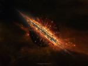
Vous avez toujours eu envie de créer une belle planète, mais vous ne savez pas comment vous y prendre ; ça tombe justement bien, parce que vous allez lire un tuto entièrement consacré à ça.
Le tutoriel est composé de deux parties. Dans cette premiere partie, vous saurez comment créer la base d'une planète, c'est-à-dire la texturisation, la sphérisation, la colorisation et enfin l'ombre de votre planète. Puis, dans la seconde partie, nous nous attaquerons à l'atmosphère de notre planète pour la rendre plus vivante en y ajoutant plus de détails. ;)
Tout d'abord, les formats dans lesquels nous allons travailler vont être très grands, ceci va nous permettre d'avoir des textures de très bonne qualité, donc ne vous étonnez pas si vous voyez des textures qui font dans les 4000 pixels.
Ce qui est important dans la création d'une planète, ce sont les trois bases principales :
l'ombre de votre planète ;
l'atmosphère de votre planète ;
et enfin la base de votre planète.
Plus communément, la base sera tout simplement la texture de votre planète que vous aurez « sphérisée » (avec l'outil Sphérisation) afin de lui donner la forme d'une boule.
L'atmosphère sera notamment constituée par la lueur externe, la lueur interne, l'ombre interne et bien d'autres choses ; avec ça vous donnerez une vie à votre planète (vous verrez toute une partie consacrée à ça dans un autre chapitre).
Et enfin l'ombre de votre planète, son ombre quoi. Attention l'ombre n'est pas toujours évidente à placer et à régler. Je vous expliquerai tout ça par la suite.
Eh oui, avant de faire des ronds on va commencer par créer la texture de notre planète, ça sera un peu comme son corps, sans texture la planète n'existerait pas. Comme je vous l'ai dit plus haut, veuillez prendre un format assez grand, de préférence dans les alentours de 5000*5000 pixels. Mais pour vos débuts, avec 1000*1000 pixels, cela devrait être suffisant. ;)
1. Créez votre document, 1000*1000 pixels, après ça nous allons chercher diverses textures.
Pour cela, vous avez plusieurs solutions qui s'offrent à vous :
Pour les images, vous pouvez allez sur Google Earth (qui est un logiciel), ou sur Google Maps (directement sur un site) ou encore sur MODIS ou encore enfin, sur un autre site de la NASA. Autrement dit, vous avez le choix.
Google Maps
Sur Google Maps, par exemple, mettez-vous en vue satellite et prenez quelques textures en faisant une impression d'écran ("impr. écran Syst" sur votre clavier), attention à ne pas trop zoomer. En effet, pensez que votre planète sera vue de l'espace ; on ne doit pas trop voir les détails.
Puis, une fois votre impression d'écran faite, hop retour sur Photoshop, faites Fichier/Nouveau (CTRL+N), collez votre impression d'écran, et sélectionnez une partie de votre texture avec l'outil de sélection carré ; évitez de sélectionner trop petit sinon vous aurez pas mal de boulot pour remplir votre feuille de 1000*1000 pixels, enfin après c'est vous qui voyez. :D Bon après, ça dépendra bien sûr de la taille de votre écran (et de votre résolution) ; effectivement si vous avez une résolution de 1600*1200 pixels lors de vos impressions d'écrans, vos textures seront plus grandes et donc par logique vous aurez à en faire moins.
Une fois votre texture sélectionnée, copiez et collez-la sur le document de 1000*1000 pixels que vous avez créé au tout début. Refaites la même manipulation avec plusieurs autres textures pour que, au final, tout votre document soit rempli. Comme je vous le disais, cette étape est assez longue et tout ça dépendra bien évidemment de la taille de votre feuille et de la résolution de votre écran. Plus votre document sera grand, plus il vous faudra de textures.
Visible Earth
L'autre technique, un peu plus simple, car là, on va directement prendre "des bouts de pays", sur le site Visible Earth de la NASA. Pourquoi plus simple ? Tout simplement parce que là, les textures vont être très grandes, elles ne vont pas dépendre de la taille de votre écran comme ce qu'on a fait précédemment.
Alors, commencez par choisir des pays dans cette liste. Ouvrez les images, avec la meilleure qualité possible, et, comme pour la technique avec Google Maps, copiez-les et collez-les dans un document assez grand (10 000 * 10 000 pixels par exemple). Mettez-les un peu n'importe ou en essayant de respecter les couleurs, les tons, etc.
Voici ce que j'obtiens à la fin de mon placement de textures :
Voilà, maintenant on va passer à l'étape suivante : Nous allons recoller toutes les textures entre elles afin de ne plus voir les coupures qu'il y a entre chaque texture. Je vais vous expliquer plusieurs techniques de montage...
Collage : 1re technique
Pour cette technique (et même de manière générale d'ailleurs), pour être le plus précis possible, n'hésitez pas à utiliser le zoom. Les outils tampon de duplication, gomme ainsi que l'outil correcteur vont vous être très utiles pour cette étape.
Pour exemple, j'ai pris trois textures que j'ai placées sur mon document :
Puis je procède à la désaturation :
Pourquoi désaturer ? Parce que relier les textures entre elles de façon presque parfaite avec cette méthode est bien plus facile si vous travaillez dans le même ton (noir et blanc ici). Bien sûr, après il faudra colorier vous-même votre texture à la fin de votre collage.
J'ai trois calques, le calque n°1 est au-dessus des calques 2 et 3, le calque 2 est entre le 1 et 3 et enfin le calque 3 est en dessous du 2 et du 1. Pour le moment je ne toucherai pas au calque 3 qui est tout en dessous.
Je vais seulement pour le moment gommer la partie que j'ai hachurée sur les calques 1 et 2. Pour éviter le gommage « brut », modifiez l'opacité et le flux de votre gomme.
Une fois ceci fait, utilisez l'outil tampon de duplication afin de reproduire les quelques motifs que vous avez sur vos différents calques. J'obtiens ceci à la fin :
Collage : 2e technique
Bien plus facile, là il vous suffit simplement de placer vos textures où vous voulez sur votre document comme je vous l'ai expliqué plus haut. Ensuite sélectionnez deux textures qui se croisent (là où vous voyez une coupure) :
Puis faites : Edition / Fusion Automatique des calques. Et comme par magie, vous obtiendrez une superbe fusion. :) Fusionnez ces deux textures et recommencez avec celle-ci et une autre texture, jusqu'à ce que vous ayez fait toutes les images de votre document. À la fin, vous avez une seule et unique texture.
Avec ça vous pouvez aisément faire votre texture en un rien de temps et sans même devoir coloriser l'image au final. :)
Collage : 3e technique
Astuce pour les paresseux qui ne veulent pas faire leurs textures (parce que c'est trop long :D ). Il existe des textures que des personnes ont faites pour leur propre planète et mettent à la disposition du publique. Bande de veinards. :p
Vous pourrez en trouver facilement sur ce site. Il y en a qui sont de bonne qualité, certaines sont colorisées, d'autres pas ; à vous de choisir. Ou même, vous pouvez directement utiliser une seule texture d'un seul pays pour votre planète sur Visible Earth (ce que nous verrons dans le chapitre suivant).
L'avantage avec cette technique, c'est que vous pouvez directement passer à l'étape suivante. :)
Maintenant, on va donner une forme ronde à notre texture grâce à l'outil sphérisation de Photoshop. Cet outil va zoomer sur le milieu et étirer la texture sur les côtés afin de lui donner la forme d'une boule : c'est là qu'il est important d'avoir une texture de bonne qualité (de grande taille).
Pour cela, sélectionnez votre texture à l'aide de l'outil ellipse.
Ensuite appuyez sur les touches CTRL+MAJ+I afin d'inverser la sélection (ou Sélection / Intervertir dans le menu), puis appuyez sur SUPPR pour supprimer les bords qui ne nous servent plus à rien, et vous obtenez ceci :
Jusqu'ici rien de bien compliqué. Maintenant, vérifiez que seulement votre texture est sélectionnée (CTRL + clic sur votre calque), puis, allez dans Filtre/Déformation/Sphérisation.. Mettez à 100%.
Et voici l'étape la plus difficile dans la création d'une planète. Mais cette étape ne s'adresse seulement qu'à ceux qui ont une texture en noir et blanc !
Technique automatique
Pour ceux qui auront du mal dans cette étape, il vous reste une possibilité qui consiste à modifier la teinte entière de votre planète (CTRL+U en raccourci ou Image / Réglage / Teinte, Saturation). Bien entendu, vous obtenez une planète avec un seul ton de couleur...
Autre possibilité un peu plus intéressante :
Sélectionnez votre planète afin d'avoir la forme de la sélection de celle-ci.
Remplissez un nouveau calque d'une couleur (#7a3700 pour l'exemple).
Mettez ce calque tout au-dessus des autres et passez-le en mode couleur. Et hop :
Bon ça n'a pas l'air terrible, mais là vous avez la possibilité de choisir votre couleur plus facilement. Et n'oubliez pas que l'ombre n'est pas encore là. ;)
Technique manuelle
L'autre technique est plus difficile, mais vous pourrez colorer votre planète à souhait dans les couleurs que vous désirez.
Sélectionnez l'outil baguette magique, puis réglez la tolérance de celle-ci, plus votre chiffre est petit, plus vous serez précis, mais plus le travail sera long et ardu. Dans mon exemple, je n'ai pas dépassé la valeur de 30.
Commencez maintenant par sélectionner une partie de votre planète, puis dans un nouveau calque remplissez votre sélection avec la couleur que vous désirez. Il ne vous restera plus qu'à jouer avec les modes de fusion et la transparence de chacun des calques que vous allez créer.
Les modes de fusion qui marchent le mieux sont :
incrustation ;
lumière crue ;
lumière tamisée.
Pour vous montrer un petit exemple, je sélectionne une partie de ma texture :
Je la remplis d'une couleur (#476e42), je règle son opacité à 60% et je la mets en mode incrustation :
Bien, maintenant c'est presque la dernière étape : elle consiste à créer l'ombre de notre planète. C'est très simple, pas de panique.
Avant toute chose, il faut que vous sachiez qu'il y a deux formes d'ombre pour une planète.
La forme convexe, simple à mettre en œuvre, s'utilise quand la source de lumière est très éloignée par rapport à votre planète.
La forme concave, légèrement plus difficile à créer, s'utilise quand la source de lumière est très proche ou juste devant votre planète.
Pour la forme convexe : commencez par sélectionner votre planète, puis remplissez cette sélection de noir dans un nouveau calque. Désélectionnez-le, puis allez dans Filtre/Atténuation/Flou gaussien.
Donnez-lui un flou gaussien d'une valeur de 50 par exemple (après c'est à vous de juger en fonction de la taille de votre planète).
Une fois ceci fait, il ne vous reste plus qu'à déplacer votre ombre à l'endroit voulu. Pour l'exemple, déplacez-la très légèrement vers la droite. Et mettez le calque d'ombre à 80% d'opacité.
On va éviter d'avoir une coupure net. Pour cela, dupliquez votre calque d'ombre, et décalez-le encore une fois très légèrement vers la droite. Vous aurez une sorte de petit dégradé d'ombre. :)
Comme vous l'avez vu, l'ombre dépasse de la planète. On va remédier à ça en ajoutant un masque de fusion autour de la planète.
Sélectionnez votre planète (CTRL + Clique sur le calque).
Sélectionnez votre ombre (en gardant la sélection).
Et cliquez sur « ajouter un masque de fusion » en bas de la palette des calques.
=>
Pour la forme concave, vous avez plusieurs solutions, la plus simple c'est de « jouer » avec le filtre éclairage de Photoshop (Filtre / Rendu / Éclairage), voyez plutôt :
L'autre solution, peut être plus complexe, j'y reviendrai dans le chapitre suivant.
Voilà la première partie de votre planète, maintenant pour l'améliorer il ne nous restera plus qu'à lui donner une atmosphère, et ça, c'est dans la partie suivante. ;)
Dans la première partie vous avez appris à faire le début d'une planète, c'est-à-dire : créer sa texture, la sphériser pour lui donner l'apparence d'une demi-boule et mettre l'ombre à la fin.
Cela n'est qu'un début, car ça ne suffit pas vraiment pour avoir une belle planète bien complète ; il manque des détails, il manque une atmosphère. Bien sûr, pour les personnes qui veulent juste une planète miniature par exemple, les détails importeront peu et donc la première partie sera suffisante ; pour les autres, les curieux, ceux qui accordent plus d'importance aux détails, alors c'est parti ! On attaque la deuxième partie maintenant !
Avant de commencer toute chose, il faut bien que vous ayez en tête la création que vous voudriez avoir au final. Eh oui, avant de partir à l'aventure il faut des plans, des notes... sans quoi, à un moment donné, vous vous retrouverez complètement perdu. Pour le Space Art, c'est à peu près la même idée.
Déjà, nous, ce que l'on voudrait, c'est une planète, mais aussi un soleil qui fera office de source de lumière. Sans lumière, notre planète serait dans le noir total et l'on n’y verrait rien, il n'y aurait plus d'intérêt du coup...
Après, vous devez choisir sur quelle taille de document vous voulez travailler. En effet, au départ, les textures qu'on utilise sont très grandes, il faudra que vous sachiez de combien de pixels vous allez réduire tout ça pour que la texture se retrouve à une taille convenable par rapport à la taille de votre document précédemment choisie. Nous, pour l'exemple suivant, on va prendre une taille de fond d'écran classique (16/10) : 1440 * 900 pixels.
Ensuite, il faut que vous ayez une petite idée de l'ambiance que vous voulez avoir, mais aussi des différentes couleurs que vous voulez utiliser, des textures que vous allez prendre, si vous souhaitez représenter quelque chose de plus ou moins réaliste ou au contraire de complètement fantastique et abstrait, etc. Tout ça constitue l'atmosphère de votre planète, sans ça elle n'aurait aucun charme et serait dépourvue de sens.
Une fois que vous avez toutes ces idées en tête, il faut que vous sachiez à l'avance où vous allez placer votre (vos) planète(s) et votre(vos) source(s) de lumière. Pour l'exemple, notre source sera en haut à gauche et notre planète au milieu, bien visible, en gros plan, pas trop loin de la source pour qu'elle puisse être légèrement éclairée sur le dessus. Schématiquement, ça donnerait ça :
Comme on l'a vu dans la partie 1, l'ombre est de forme concave (ça nous fera un petit entraînement au passage). ;) Pour corser la chose un peu plus, on va mettre une deuxième source de lumière en bas à droite, cette source sera bien plus éloignée de la planète, de façon à ce que seul le bord droit soit éclairé. L'ombre à droite sera de forme convexe, un autre exercice pour nous. :)
Bon, deux soleils, ça n'est pas réaliste, mais comme je vous l'ai expliqué dans introduction, c'est ça qui est vraiment intéressant dans le Space Art, vous pouvez créer tout ce qui vous passe par la tête (tout en restant dans le thème de l'astronomie) !
Maintenant que vous avez tous ses petits détails sous la main, vous pouvez commencer !
Hop, on va directement commencer avec une nouvelle planète, je prends la texture directement sur le site de la NASA.
Vous avez le choix par pays dans la grande liste en dessous.
Pour l'exemple, je vais allez prendre une texture du Groenland (Greenland) ; à partir de là, il y a beaucoup de textures de ce pays qui s'offrent à vous sous différents angles de vues ; un grand choix s'offre à vous. Pour l'exemple toujours, je vais prendre cette texture qui me parait bien avec ses différentes couleurs. Bon ça n'est peut-être pas le meilleur choix, parce que comme vous l'avez remarqué, sa taille n'est que de 1717 x 1899 pixels au maximum, or, comme je vous l'ai conseillé dans la partie 1, il faut essayer de prendre des textures HQ (entendez par là : Haute Qualité, c'est-à-dire au moins 4000 pixels).
Ça n'est pas grave, c'est bien pour un début, et ça permettra à tout le monde de travailler dessus quel que soit la puissance de votre ordinateur.
Notre planète :
On va transformer cette texture en une boule (une demi-boule en fait) pour qu'elle puisse ressembler à une planète. Comme dans la partie 1 :
On sélectionne au maximum sans couper sur les bords avec l'outil ellipse avec MAJ enfoncé pour un rond parfait.
Ensuite, on supprime les bords dont on n'a pas besoin en inversant la sélection (CTRL+MAj+I), puis SUPR.
Et enfin, on sphérise 2 fois (Filtre/Déformation/Sphérisation)
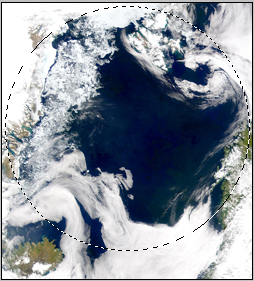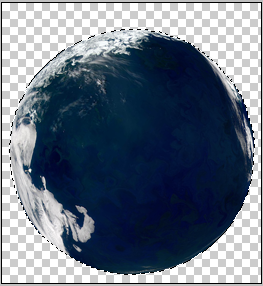
Alors au final, c'est toujours le même processus, c'est rapide, c'est simple, pas de problèmes à ce niveau-là.
Maintenant, on va travailler notre texture en lui donnant un peu plus de punch et de relief.
1. Modification de la teinte :
Premièrement, on va légèrement modifier la teinte et la saturation pour que les couleurs soient un peu plus vives, pour cela il faut aller dans Image/Réglage/Teinte-Saturation (CTRL+U pour les intimes).
Les modifications restent très légères, mais importantes pour la suite. Vous pouvez choisir vos propres réglages, mais attention à ne pas trop sursaturer sinon la texture perdra toute sa valeur. Au niveau de cette texture, je descends à -20 pour la teinte et je monte à +20 pour la saturation :
2. L'ombre intérieure :
Cette étape est facultative (mais que je vous la conseille fortement pour la qualité de votre image finale), nous allons lui donner « un effet d'ombre intérieur ». On peut dire que cela va donner un léger relief sur toute votre texture comme si une source de lumière venait éclairer la texture pour de vrai.
Et tout ça, grâce au filtre d'estampage qu'on retrouve dans Filtre / Esthétiques / Estampage...
Donc, pour cela, choisissez au préalable une source de lumière imaginaire pour le moment (vous placerez ça à la fin). Pour notre exemple, comme on l'a vu plus haut, nous allons prendre une source de lumière qui se situera en haut à gauche.
Le principe étape par étape :
Dupliquez le calque de votre planète.
Sélectionnez le calque dupliqué.
Allez dans Sélection/Plage de couleur/Tons clairs.
Une fois ceci fait, gardez la sélection active puis allez dans Filtre/Estampage puis choisissez la direction d'où viendra la source de lumière (133° pour l'exemple) et mettez une hauteur de 3 par exemple (vous pouvez varier entre 2 et 4) et gardez un facteur de 100%.
Ensuite, on va refaire la même chose sauf qu'on va choisir les tons foncés cette fois.
1. Refaites une sélection du calque dupliqué.
2. Allez dans Sélection/Plage de couleur et choisissez : tons foncés.
3. Retournez dans Filtre/Estampage, gardez les mêmes valeurs que précédemment, mais cette fois-ci mettez l'angle à l'opposé, c'est-à-dire -47°.
Voilà, pour finir mettez le calque en lumière tamisée ou en incrustation, ça dépendra de vos goûts (vous pouvez régler l'opacité en même temps). Moi je vais mettre le calque en lumière tamisée avec une opacité qui restera à 100%.
Vous pouvez voir la différence sur l'exemple final (avant à gauche et après à droite) :
C'est vrai que la différence est très minime, mais l'image de l'exemple est très petite, vous ne verrez forcément pas grand-chose... Par contre, avec un document de plus grande taille (4000*4000 pixels), vous risquez de voir une sacrée différence. :)
3. L'ombre extérieure : la forme concave
Maintenant, on va recouvrir notre planète d'une ombre. Comme on l'a vu, sur le schéma d'au-dessus dans l'avant-propos c'est une ombre de forme concave. Je vous avais montré comment créer ce type d'ombre grâce au filtre éclairage dans la partie 1. Ici, on va procéder un peu différemment, ça va vous permettre de connaitre une nouvelle technique. ;)
Alors voilà comment ça se passe : Déjà, on va recouvrir notre planète entièrement de noir dans un nouveau calque.
1. On sélectionne notre calque de planète. 2. On remplit cette sélection de noir dans un nouveau calque
Ensuite, on va refaire une sélection (avec l'outil ellipse) pour supprimer un morceau de ce calque pour que cela puisse justement ressembler à une forme concave. Puis, quand vous êtes à peu près bien calé, appuyez sur SUPR pour supprimer ce morceau de noir (vous n'êtes pas obligé d'avoir un rond parfait). L'exemple en image :
Une fois qu'on a notre forme d'ombre, on va lui donner un peu de flou : du flou gaussien (Filtre / Atténuation / Flou gaussien). N'abusez pas trop sur le flou, disons qu'une valeur entre 10 et 20 serait bien adaptée. Pour l'exemple, je mets une valeur de 15. Une fois que c'est fait on va légèrement agrandir ce calque avec la transformation (CTRL + T), parce que le flou gaussien ne nous intéresse qu'à une seule extrémité du calque (au niveau de la courbe), mais comme vous le voyez, le flou s'est étendu sur toutes les extrémités, c'est pour ça qu'on agrandi le calque pour faire sortir ce flou de trop des autres extrémités.
Vous pouvez maintenant faire un "dégradé" d'ombre pour éviter d'avoir une coupure nette comme je vous l'ai expliqué dans la partie 1.
4. L'ombre extérieure : la forme convexe
On a prévu deux sources de lumière, une en haut à gauche assez rapprochée et une en bas à droite assez lointaine. On a paramétré notre première ombre en fonction de la première source. Mais maintenant, comment procéder pour la deuxième ombre ?
On va reprendre sensiblement la technique qu'on a utilisée pour la première ombre ; c'est-à-dire qu'on va utiliser une sélection et l'inverser pour supprimer des parties...
On rappelle que notre deuxième éclairage en bas à droite est relativement petit. Donc, on va commencer par sélectionner notre document avec l'outil ellipse, et, ce qu'on veut garder, se trouve à l'intérieur de la sélection, c'est pourquoi il y a un espace qui doit rester libre. :)
Quand on est à peu près bien calé, on inverse cette sélection (MAJ+CTRL+I) et on supprime ce qui est en trop (SUPR sur le clavier).
Maintenant, il va falloir donner un petit coup de flou gaussien sur notre ombre, car là elle est bien trop lisse, mais seulementen bas à droite (puisque vous l'avez déjà fait pour en haut). Pour cela rien de plus simple, utilisez l'outil plume ou le lasso, puis faites un périmètre là où vous voulez que le flou gaussien apparaisse (j'utilise la plume dans l'exemple). Et enfin, faites le flou gaussien (Filtre / Attenuation /Flou gaussien), avec la même valeur que vous aviez donnée pour la forme concave.
L'illustration de cette étape en images (à suivre de gauche à droite) :
Voila à quoi ressemble notre planète à ce stade :
On a enfin notre belle planète, on va pouvoir passer aux choses sérieuses en lui donnant un peu plus de vie...
Maintenant, il ne nous reste plus qu'à placer cette fameuse atmosphère dont je vous parle depuis le début, c'est grâce à elle que votre planète gagnera du volume et des couleurs, et là, on pourra vraiment voir qu'une source de lumière vient éclairer les bords de votre planète. En plus, vous avez de la chance, c'est la partie la plus facile, on aura juste à appliquer un effet de style sur un calque et le tour sera joué. ;)
Démarrons simplement :
1. On va remplir la sélection, avec le pot de peinture, de noir. Commencez par sélectionner votre calque de base : la planète.
2. Remplissez cette sélection de noir dans un nouveau calque.
3. On va placer ce calque juste en dessous des ombres et mettons-le en mode superposition. Le mode de fusion Superposition à pour effet de rendre complètement invisible la couleur noire, ce qui est intéressant pour nous, car comme je vous l'ai dit, ce qui nous intéresse c'est ce qui va se passer autour...
4. Et c'est là qu'on va appliquer un style particulier à ce calque. Pour ça, il suffit tout bonnement de cliquer deux fois sur le calque. (D'ailleurs, on peut apercevoir le logo FX qui apparait à gauche du calque pour vous informer qu'un style a déjà été appliqué dessus. Pour le supprimer, faites un clique droit / Effacer le style de calque le style. Pour le modifier, recliquez deux fois dessus).
Voilà ce qui nous intéresse :
1. Une Lueur externe, effet très utilisé. De ses extrémités, la planète dégage une source de lumière. Attention toutefois de ne pas trop abuser de sa taille !
2. Une Lueur interne. C'est la lueur qui se trouve à l'intérieur de la planète tout près des bords, sans elle nous n'aurions pas cet effet de rondeur. Vous aurez besoin de cet effet tout le temps. ;)
3. L'ombre interne. Effet peu utilisé, mais parfois utile, il est lui aussi à l'intérieur de la planète, mais il est généralement plus éloigné que la lueur interne. Peu visible, mais sans ça, la planète ne rendrait pas si bien au final. :)
Je vous mets ici mes propres réglages pour l'exemple, par la suite je vous conseille de faire des expérimentations pour voir ce que ça pourrait donner ;)
Maintenant les nuages ! Au risque de vous décevoir, je dirais que c'est sûrement l'une des parties les plus complexes. Pourquoi ? Tout simplement parce que le rendu final est plutôt bien et ça, vous devez le comprendre : plus c'est beau, plus c'est dur, plus c'est long. En effet, là on ne se contente plus d'utiliser de simples filtres et de placer des textures comme dans la première partie, on arrive au point où plusieurs méthodes peuvent être utilisées. Une méthode peut-être suivie de plusieurs façons, chaque façon n'est pas plus mauvaise qu'une autre. Une certaine méthode peut donner un tel résultat alors qu'une autre, bien moins complexe et plus rapide, peut donner exactement le même résultat. Dans ce tutoriel je vous ai décrit plusieurs de mes méthodes. Bientôt, progressivement, il faudra que vous soyez en mesure d'essayer d'autres méthodes, c'est-à-dire de pouvoir mettre en œuvre vos propres tests, car c'est ça que vous devez comprendre maintenant : dans le Space Art (et bien des fois dans tout autre art) c'est en essayant d'autres techniques que l'on peut arriver à un certain résultat.
Mais ça, vous ne le verrez qu'au fur et à mesure que vous pratiquerez.
Alors, voilà comment ça se passe. Tout d'abord, comme pour faire une planète, il nous faut une texture. Cette fois-ci, c'est une texture de nuages qu'on devra chercher. Cette texture est sûrement plus dure à trouver sur internet. L'endroit où vous aurez le plus de chance d'en trouver sera sur le site de la NASA. En attendant, je vous ai fait un petit pack de ce que moi j'avais pour vous aider à débuter.
Ces textures, que vous garderez dans un coin, vous serviront pour vos différents essais. Elles sont parfaites pour un début. Elles sont déjà rondes, il ne vous restera plus qu'à les mettre à la taille de votre planète (avec peut-être un petit coup de Sphérisation), suivre les indications qui vont venir et le tour sera joué.
Maintenant, pour le tutoriel, nous allons utiliser une autre texture. Une texture carrée cette fois, on devra la découper, puis l'intégrer dans le document. Et comme vous l'aurez peut-être remarqué, c'est en fait un motif qui se répète, c'est pour cela qu'elle paraît si grande.
Étape 1 : Le découpage
Ça, c'est facile. Ouvrez le fichier texture, puis, il vous suffit d'utiliser l'outil "ellipse de sélection", en restant appuyé sur MAJ pour un rond parfait. Vous pouvez sélectionner n'importe quelle partie de l'image, essayez toutefois de prendre une partie assez grande. Inversez la sélection, SUPPR (ça supprime les contours). Re-sélectionnez votre calque, puis Filtre/Sphérisation 100% (deux fois si nécessaire). Ensuite, copiez votre sélection et insérez-là dans le document (le .PSD) où se trouve votre planète, il suffira enfin de la mettre à la même taille que celle-ci (CTRL+T). Et pour finir, mettez-la sous vos calques d'ombre, en d'autres termes, juste au-dessus du calque de votre planète.
Notez qu'il y avait une autre technique plus rapide :
Mettre directement le fichier texture dans le .PSD où se trouve votre planète,
Re-dimensionner la taille de votre texture (CTRL+T).
Sélectionner votre planète (CTRL + clique sur le calque "planète").
Inverser la sélection (MAJ + CTRl + I).
Supprimer.
Et voilà, votre texture sera directement intégrée sur votre planète. Mais un problème intervient au niveau de la sphérisation. Eh oui, votre texture est bien trop plate pour pouvoir rester comme ça. Il faut absolument lui donner un peu de volume. Le problème, c'est qu'en la sphérisant, vous perdrez énormément en qualité, car vous avez déjà redimensionné votre texture et à ce stade vous ne pouvez plus la réduire, c'est pour ça qu'il faut toujours sphériser avant puis redimensionner après.
Étape 2 : Séparation des "tons"
Mais, comment faire ?
Si l'on regarde de plus près notre très grande texture de nuage, on aperçoit sans difficulté qu'il y a différentes variations de gris. On va séparer ces tons de gris en deux groupes : les plus clairs et les plus foncés, qu'on conservera pour former nos nuages.
Avant de commencer, il se peut que parfois, sur certaines textures, on ait du mal à bien différencier les tons. Alors, pour lui donner un peu plus de "punch", on règle le niveau (CTRL+I). On préfère rendre généralement la texture plus noire, en faisant ressortir le blanc sans abuser. Il n'y a pas vraiment de réglage par défaut. Regardez attentivement l'image en même temps que vous faites votre réglage. Personnellement, j'essaie de ne pas dépasser le bord des courbes sur les extrémités, puis j'affine avec le curseur du milieu.
Occupons-nous d'abord des Tons moyens : Commencez par dupliquer votre calque de nuages puis sélectionnez cette copie, assurez-vous que seule cette copie est sélectionnée. Puis, Sélection / Plage de couleurs / Tons moyens. Voilà, maintenant pour se débarrasser du reste, rien de plus simple. Il suffit d'inverser la sélection et d'appuyer sur la touche supprimer (SUPPR). Et pour finir, mettez ce calque en mode Superposition et mettez son opacité à 100%.
Dupliquez le calque de départ une nouvelle fois, et, cette fois-ci, on va faire exactement la même chose pour les tons clairs. Assurez-vous juste qu'à la fin de l'opération, le calque des tons clairs se trouve en dessous de celui des tons foncés. Mettez le calque en superposition, mais laissez-le à 100% ; ce calque doit être plus clair que celui d'au-dessus (celui des tons foncés).
Seul le calque aux tons clairs est visible ici :
Et pour finir, il ne vous reste plus qu'à mettre le calque de départ (le calque des nuages entier, que j'appelle "nuage") en superposition. Vous pouvez mettre les trois calques visibles si ça n'est pas déjà fait.
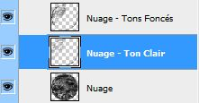
Étape 3 : Un peu de relief
Dans cette partie, on va donner un peu de relief aux nuages, parce qu'actuellement ils sont "collés" à la texture de votre planète. On va faire en sorte de placer une sorte d'ombre juste en dessous, tout en respectant le sens de la lumière qu'on a choisi au tout départ. Alors, il y a bien entendu plusieurs techniques pour faire ça, mais la plus simple maintenant pour vous, c'est la technique qu'on a utilisée au tout début du tuto pour donner du relief à votre texture (l'ombre intérieure). Vous vous souvenez ?
Un petit rappel ici : Déjà, regardez si vous avez bien la même configuration de calque que moi, c'est à dire, deux calques différents qui sont situés en haut pour les tons clairs et les tons foncés, et qui sont tous les deux en superposition à 50% et 100%. Puis, en dessous, le calque Nuage en mode superposition. Bon, maintenant on va dupliquer notre calque Nuage, ça sera le calque qu'on va utiliser pour notre relief ; passez-le en mode normal pour le moment.
Et comme avant :
Sélectionnez le calque dupliqué (Nuage copie).
Allez dans Sélection/Plage de couleur/Tons clairs.
Une fois ceci fait, gardez la sélection active puis allez dans Filtre/Estampage puis choisissez la direction d'où viendra la source de lumière (toujours 133° pour notre exemple) et mettez une hauteur de 3, par exemple (vous pouvez varier entre 2 et 4) et gardez un facteur de 100%.
Et la même chose pour les tons foncés
Refaites une sélection du calque dupliqué.
Allez dans Sélection/Plage de couleur et choisissez : tons foncés.
Retournez dans Filtre/Estampage, gardez les mêmes valeurs que précédemment, mais cette fois-ci mettez l'angle à l'opposé, c'est-à-dire -47°.
Et pour finir, mettez le calque ("Nuage copie") en Incrustation ou en Lumière tamisée, en jouant avec l'opacité - entre 50% et 100%.
Et voilà ! Vous avez finalement réussi cette partie, bravo. Normalement, vous devriez avoir un truc qui ressemble à peu près à ça :
Cette partie est maintenant terminée, si l'on récapitule ce que l'on vient de voir voir sur les planètes, vous êtes maintenant en mesure de créer la base de votre planète pour la mettre en relief juste après, d'intégrer une atmosphère autour de cette planète et de placer des nuages grâce à une texture.
Dans un prochain chapitre, je vous expliquerai comment créer un fond étoilé et bien d'autres choses qui existent dans l'espace. ;)
Et surtout n'oubliez pas, pour la lumière :
Testez différentes directions,
ne vous limitez pas à une seule et même couleur,
essayez d'utiliser plusieurs degrés d'intensité dans vos styles.
Ah, là ça devient intéressant parce qu'on va "habiller" notre planète. Autrement dit, on va lui donner encore plus de valeur : des villes éclairées, des explosions, des anneaux planétaires... Bref, On retrouve tout ça ici !
Vous avez maintenant votre planète en main, mais vous voudriez qu'elle soit habitée. En supposant que les habitants de votre planète en sont à un stade avancé d'évolution et qu'ils ont réussi à maîtriser l'électricité, le meilleur moyen, pour nous qui sommes dans l'espace, de pouvoir voir qu'une planète est habitée c'est de pouvoir voir des lumières de villes quand il fait nuit. Bref, nous ce qu'on veut c'est, d'un coté de notre planète la partie éclairée (le jour) et de l'autre (la nuit) non-éclairée avec des petits points lumineux pour simuler l'éclairage de vos villes.
Il y a plusieurs méthodes pour créer ce genre d'effet. Là, je vais vous présenter deux méthodes différentes, une facile et une un peu plus dure. Bien évidemment, la technique complexe sera toujours plus intéressante que la facile, mais sera plus longue. À vous de choisir.
Voilà la base que je vais utiliser pour faire ce petit tutoriel. Vous pouvez reprendre cette image pour vous entraîner vous aussi.
Une ville éclairée : Première méthode :
On va faire ressortir les couleurs de la texture de la planète en petits grains, principalement sur les contours visibles de votre texture. Vos villes éclairées seront en bas à droite dans l'ombre sur l'image de l'exemple.
Commencez par dupliquer le calque de notre planète complète. Sur le calque dupliqué, allez dans Filtre / Renforcement / Accentuation. On garde les valeurs par défaut, c'est-à-dire :
50% pour le grain,
Un rayon de 1,0 pixel,
Et enfin un seuil de 0.
Répétez cette étape (CTRL+F) jusqu'à ce que vous ayez à peu près la même chose que sur mon image. Pour l'exemple, j'ai répété 9 fois l'opération et j'obtiens ça (ne prêtez pas attention aux grains qui sont dans la zone lumineuse) :
On va ensuite désaturer l'image pour supprimer toutes les couleurs : MAJ + CTRL + U ou Image / Réglages / Désaturation
Puis, on va légèrement atténuer le blanc et le gris grâce au niveau (CTRl + L). Observez bien la zone que j'ai entourée en rouge, c'est là votre résultat final. Le reste on s'en fiche, puisque vous le gommerez dans la prochaine étape. Moi, pour le niveau, j'utilise les valeurs 58, 1.05, 255 ; c'est-à-dire que j'essaye d'enlever une bonne partie des couleurs claires (curseur de gauche) et j'atténue ces couleurs grâce au curseur du milieu.
Ensuite, gommez les bords du calque avec la gomme, diminuez son flux et son opacité (35% par exemple) pour éviter d'avoir une coupure nette qui se verrait trop :
Voilà, vous avez terminé ! Si vous voulez, vous pouvez ajouter un peu de couleur sur votre ville en mettant dans un nouveau calque une couleur avec des tons de jaune/marron que vous passerez en mode couleur à une opacité de 40% ; ça ne se voit pas énormément, mais les détails font toute la différence. Pour accentuer encore un peu plus les lumières vous pouvez passer votre calque de "ville" en mode Densité linéaire - (ajout) et rejouer avec le niveau (CTRL+L).
Une ville éclairée : Deuxième méthode :
Voici l'autre technique, plus intéressante parce que là les grains ne dépendent pas directement de la texture de votre planète, mais d'une autre texture, et puis les tons de blanc ne sont pas aussi distinct que sur la première technique, ça sera surement un peu plus réaliste. :)
Alors, comme je l'ai dit, cette fois on utilise une texture. C'est une texture de nuage, le même type que celle qu'on a vue dans le chapitre 2. Je tape "cloud map" sur Google et je récupère l'image qui me convient (généralement des nuages sur fond noir). Celle-ci, par exemple, qu'on retrouve sur le site de la NASA Earth Observatory :
Je vais mettre la texture sur mon document dans un nouveau calque au-dessus de ma planète et le passer en mode superposition pour enlever le noir.
Puis on va sélectionner notre planète, inverser la sélection (MAJ + CTRl + I) et supprimer. Ça garde uniquement l'image qui est à l'intérieur de notre planète.
Après ça, on va passer notre calque en mode densité linéaire - et on va gommer ce qui nous n'intéresse pas. Autrement dit on supprime la partie qui se trouve dans la lumière et un peu dans les coins pour éviter toutes coupures nettes.
Maintenant, pour donner un peu plus d'intensité à cette lumière, on peut dupliquer ce calque (toujours en densité linéaire -). Pour varier un peu, on pourra lui faire faire une légère rotation.
Et enfin, un peu de couleur au pinceau pour ceux que ça intéresse (calque à passer en mode couleur). :D
Une ville éclairée : Variante :
Notez que sinon, sur internet, vous pouvez facilement retrouver des images de nuit de villes, comme sur cette image par exemple qui représente la nuit vue de l'espace : Alors là c'est intéressant, car il n'y a rien qui nous gêne (pas de nuages inutiles) et le fond est noir (on pourra le supprimer grâce au mode superposition).
Vous pouvez reprendre cette image, mettre une partie qui vous intéresse sur votre planète, un peu de sphérisation pour éviter que ça soit trop plat... et voilà. Rapidement, simplement, vous avez vos villes éclairées !
Voila une partie plutôt simple qui va vous permettre de souffler un peu. :) Le meilleur moyen d'avoir un beau lever de soleil simplement et rapidement, c'est d'utiliser le filtre Halo !
Pour ça, je vais reprendre ma planète de base que je vous ai passée juste au-dessus :
Pour commencer cette partie, ouvrez un nouveau document assez grand (500*500 pixels par exemple) et remplissez-le d'un gris foncé (#757575).
Ensuite, on va appliquer notre Halo de lumière : Filtre / Rendu / Halo, avec une luminosité de 100% en 50-300mm (zoom) ou 105mm (normal), à vous de voir. Essayez de centrer votre source le plus possible :
Voilà, maintenant transférez votre halo sur votre document de travail (là où il y a votre planète), on va supprimer la couleur grise en fond. Pour ça, on utilise un mode de fusion qui garde toutes les autres couleurs. Là vous avez le choix entre Lumière Crue, Lumière linéaire et Lumière ponctuelle. Bref, ça dépendra tout simplement de votre style. Moi j'utilise la lumière crue :
Maintenant, on va placer notre lumière. Moi, je la mets en haut à gauche puisque c'est de là que vient la source, vous pouvez même réduire le calque s'il vous semble trop grand (CTRL + T). Si vous avez utilisé un halo de 50-300mm (zoom), alors vous pouvez la placer comme ça sur le coin de votre planète sans rien toucher d'autre, on aura l'impression que la lumière vient directement dans les yeux de l'observateur.
Par contre, si vous avez utilisé 105mm (normal), alors il faudra faire quelques petits réglages puisque là, la lumière passe par le bas, donc il faut gommer le surplus qui dépasse de la planète. C'est très simple. Ajoutez un masque de fusion (le petit icône en bas) à votre calque de lumière :
Sélectionnez votre planète (CTRL + Clique sur le calque), retournez sur votre calque de lumière et sur le masque de fusion puis faites un dégradé du bas à droite vers le haut à gauche à partir de l'ombre :
Bien entendu, étant donné que vous travaillez sur le masque de fusion, seulement deux couleurs fonctionnent : le noir et le blanc. Le dégradé que vous utilisez est donc noir vers blanc.
Et voilà ! Pas bien compliqué. Maintenant, vous avez des beaux levers de soleil au bord de votre planète. Vous pouvez lui donner une couleur, parce que le blanc de base ne vous plaira pas forcément. Pour ça, allez dans le style du calque de votre Halo de lumière (cliquez deux fois sur le calque) et allez dans l'incrustation de couleur, choisissez une couleur et passez-là en mode lumière tamisée ou en incrustation...
Maintenant que vous avez créé votre planète, vous voulez tout faire cramer. Ah bah bravo !
Première technique : les petites bombes
Pour cette méthode, c'est relativement simple puisqu'on part d'un halo aussi, c'est presque la même méthode que pour le lever de soleil (vu plus haut) : un fond de gris avec un 105mm (normal), centré..
On le réduit à une taille convenable un peu moins grande que la taille du document pour le moment.
Le problème, c'est qu'on a des angles qui font des coupures trop nettes, même en densité couleur ils seront visibles. Il faut gommer ces coupures pour que lorsqu'on changera le mode de fusion, on ne puisse que très peu les voir. Pour ça, on utilise la gomme avec une opacité et un flux réduit en faisant bien le tour du halo.
On peut maintenant passer ce calque en mode : Densité couleur - et le réduire en tout petit.
Voilà, c'est votre explosion. On va lui donner un peu de couleur quand même. Il n'y a juste qu'à prendre le pinceau, et faire un simple rond (dans un nouveau calque) et passer ce calque en mode couleur :
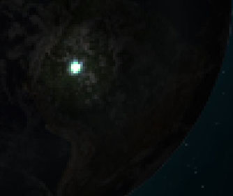
Pour donner plus de volume, plus d'intensité à l'explosion, on peut en rajouter plusieurs autres, plus petites, sur les côtés en appliquant la même technique :
Le rendu final de la première technique :
Deuxième technique : l'explosion nucléaire qui tue
Deuxième technique pour les plus féroces d'entre vous : au pinceau. Cette fois on s'attaque à LA méga-bombe atomique qui détruit tout sur son passage avec des super ondes de choc !
On va commencer par faire le centre de l'explosion, là où il y a de la couleur. Je commence par mettre mon pinceau à 30px d'une couleur orange (#ff8400), et à chaque fois que j'applique la couleur, je le réduis de 5 en 5. Je refais la même chose dans un nouveau calque, sauf que là je prends une couleur plus foncée, du rouge (#ff3600). Et pour finir, dans un nouveau calque toujours, je mets mon pinceau d'une couleur de blanc à 10px au centre et pareil, je réduis au fur et à mesure jusqu'à 1px. Je passe ce calque en incrustation.
Ensuite on passe aux ondes de choc... Pour l'onde de choc, le pinceau doit être en mode doux d'une opacité très légère (25%), pareil pour le flux et le tout de 1 ou 2px.
On va faire trois ondes, un pinceau doux de couleur blanche en mode normal d'une opacité et d'un flux de 25%. La première onde va se trouver à proximité de l'explosion, si l'on veut faire une autre onde alors on s'éloigne un peu plus et ainsi de suite. L'opacité et le flux baisseront de plus en plus eux aussi.
Voila le procédé en images, pas à pas :
Une fois que c'est fait, on va mettre une petite ombre sur les côtés des ondes pour leur donner un peu plus de relief. Cette fois, le pinceau est noir, vous pouvez augmenter l'opacité pour que ça se voit de plus en plus :
Et voila, le rendu final si on dé-zoom complètement :
Une autre petite technique qui peut être sympa, ce sont ces effets de lumières à la manière des Crop Circles sur les champs, sauf que là ils seront étalés sur toute votre planète.
Il n'y a pas vraiment 36 solutions. Au départ vous n'avez qu'à dessiner des figures un peu n'importe où sur votre planète (préférer le centre parce qu'après on va sphériser). Des cercles, des droites, des triangles, des carrés... C'est vous qui voyez, le plus efficace restera tout de même les cercles et les droites. Bref, voila ce que j'ai fait sur cette première étape pour vous montrer de quoi ça a l'air :
Pour la suite, sélectionnez votre planète et revenez sur votre calque, là où il y a tous vos traits et on va sphériser (Filtre / Déformation / Sphérisation) tout ça à 100%.
Et enfin, on va donner un style au calque. D'abord, passez le calque des Crop Circles en mode produit (il devrait disparaître). Puis, dans les styles de calques, ajoutez une lueur interne et une lueur externe. Vous pouvez essayer de changer les modes de fusion. Ceux qui marchent le mieux sont sûrement la lumière tamisée, l'incrustation et la densité couleur -. Après, ça dépendra du style que vous adopterez. ;) N'hésitez pas à modifier les valeurs jusqu'à ce que ça vous paraisse bon. Ce que j'ai :
Maintenant, on va s'intéresser à un tout autre phénomène de l'espace : les anneaux planétaires. Alors qu'est-ce que c'est ? Je reprends bien gentiment la définition simple et rapide de Wikipédia :
"Un anneau planétaire est un anneau composé de poussières et d'autres petites particules orbitant autour d'une planète dans une région en forme de disque plat. Les anneaux planétaires les plus spectaculaires et connus sont ceux de Saturne mais chacune des quatre géantes gazeuses du système solaire (Jupiter, Saturne, Uranus et Neptune) a un système d'anneaux."
Vous l'aurez compris, les anneaux sont composés de roches pas très grandes, tellement petites qu'à une certaine distance on croirait voir de la poussière. C'est ce cas-là qui va nous intéresser pour notre tutoriel.
Voilà le modèle que je vais utiliser pour ce tutoriel, que vous pourrez aussi rapidement reprendre pour vous entraîner :
C'est parti !
On va commencer par créer ces fameux anneaux. Créez un nouveau document avec une couleur de gris (#757575 par exemple) d'une taille assez grande puisqu'il faut qu'il englobe votre planète (1500 * 1500 pixels pour mon exemple).
Faites un cercle bien rond, et remplissez-le de noir. On va ajouter un style à ce calque : une lueur interne et externe, ça sera ça nos anneaux. Pour la lueur externe, changez principalement la taille de votre lueur :
N'oubliez pas de modifier le paramètre qualité. Vous avez déjà ce contour par défaut sur Photoshop, mais vous pouvez le modifier encore un peu plus pour donner un peu plus de formes à vos anneaux :
Vous obtenez ceci pour le moment :
Puis, on refait la même chose pour l'intérieur cette fois, avec la lueur interne :
Au final, vous devriez avoir quelque chose qui ressemble à cette image :
Bien, maintenant, on va supprimer ce noir en mettant une opacité de 0% au fond (les styles de calques ne sont pas perturbés).
Pour avoir un anneau plus grand, dupliquez le calque des anneaux et redimensionnez-le en plus petit à l'aide de la transformation (CTRL + T) ou utilisez les pourcentages juste en haut :
Il faut que le calque dupliqué soit obligatoirement plus petit que le précédent ; ça évite d'étirer les pixels. Vous pouvez "rejouer" avec le graphique de qualité dans les styles des lueurs si vous voulez le deuxième anneau légèrement différent du premier.
Théoriquement, c'est fini pour l'anneau, mais on va lui donner un peu plus de couleurs, car quand vous l'exporterez dans votre document (là où il y a votre planète) vous serez contents de voir un peu de couleur. Pour les couleurs, c'est relativement simple, il suffit de donner un style de dégradé. Mais avant, il faut fusionner vos anneaux de façon à ce qu'il ne reste plus qu'un seul calque sans style.
Une fois ceci fait, cliquez deux fois sur le calque pour ajouter un style de dégradé :
Vous pouvez choisir n'importe quelles couleurs, mais ne prenez pas trop de couleur "flashy", préférez le foncé. Essayez aussi d'utiliser les mêmes couleurs présentes dans votre composition de base. Et pour finir, j'obtiens ce résultat :
Fusionnez l'image (seulement l'anneau, pas le fond) avec un autre calque vide pour que le style de calque (le dégradé) ne soit pas modifié lors du transfert.
Déplacez votre calque anneau dans la composition où se trouve votre planète et transformez vos anneaux (CTRL + T) C'est là qu'on va choisir un placement. Maintenez CTRL enfoncé et faites bouger les coins afin d'obtenir une certaine perspective.
Une fois votre placement fait, il ne vous restera plus qu'à ajouter des grains pour éviter que ce soit trop lisse. Dans Filtre / Texture / Grain... Réglez l'intensité et le contraste, mais n'abusez pas ; ne mettez pas des valeurs trop hautes. Pour l'exemple, j'ai mis une intensité de 30 et un contraste de 25 en type régulier. J'ai légèrement baissé l'opacité des anneaux à 80% et voilà mon rendu final :
Si vous n'êtes pas satisfait de la couleur, au lieu de tout recommencer, utilisez l'outil Teinte/Saturation (CTRL + U) pour la modifier rapidement.
En conclusion de tout ça, on peut dire que vous avez appris à bien remplir votre planète ; vous avez réussi à la faire vivre. En d'autres termes, vous savez maintenant créer n'importe quelle type de planète. :) Dans une prochaine partie, on verra en détail comment faire des types de planète bien spécifiques : celles de notre système solaire avec l'aide de tout ce que vous avez appris. ;)
Dans le Space Art, et c'est indispensable, il nous faut une source de lumière, il y a bien des façons d'en faire une, cela va du simple point blanc sur du noir, à des formes bien plus complexes, nous rappelant ainsi les grandes nébuleuses que l'on regarde avec admiration devant son écran d'ordinateur (ou dans votre télescope pour les amateurs du genre). La source de lumière que vous connaissez le mieux c'est le soleil, notre étoile principale. C'est elle que nous allons étudier maintenant dans les deux prochains chapitres.
Il y a bien évidemment plusieurs façons de faire un soleil. Et puis, après tout, ce n'est qu'une source de lumière, c'est facile de faire ça, je prends mon pinceau d'une taille de 80, une couleur blanche, un petit coup et hop, voilà le résultat :
Hum, oui, ça n'est pas si mal pour représenter une source de lumière, MAIS seulement au loin, vraiment très loin en fait (d'ailleurs, ça sera sensiblement la même technique que nous utiliserons pour créer des petites étoiles dans l'espace, je vous laisse deviner comment :) ). Nous, ce qu'on veut, c'est quelque chose de plus détaillé parce que c'est ce qu'on recherche à créer avant tout.
Pour en revenir à notre soleil, au lieu de vous présenter seulement une méthode, je vais vous en montrer plusieurs, comme d'habitude. Mais pour le moment, ça va être les simples bases, la difficulté sera plus dure au fur et à mesure. À la fin, on mélangera tout ce qu'on aura appris pour construire un véritable soleil qui vous éblouira tellement que vous serez obligé de mettre des lunettes de soleil devant votre écran (ça sera dans le prochain chapitre). Mais rassurez-vous, TOUT le monde peut y arriver sans problème. :zorro:
Revenons à nos pinceaux. Sur la première image, la simple petite lueur que je vous ai montrée, c'était juste un coup de pinceau (un simple clic de souris en fait). En reprenant ce système de "coup de pinceau", on va faire un soleil légèrement plus coloré et plus grand. En d'autres termes, quelque chose qui ressemblera plus à un vrai soleil (mais toujours vu de loin, puisqu'on ne va pas détailler dans cette partie). Et tout ça, grâce aux modes de fusion.
Cette première méthode va vous familiariser avec les modes de fusion.
Déjà. Qu'est-ce que les modes de fusion ?
Ses fameux modes, vous les trouvez généralement dans la barre des calques, c'est une grande liste déroulante avec plein de noms incompréhensibles qui font peur à tout le monde. On en a parlé précédemment, du moins je les ai beaucoup utilisés, mais je ne vous ai pas vraiment expliqué à quoi ça servait et pourquoi on s'en servait. Alors, c'est le moment ou jamais. :)
En fait, on retrouve ses modes de fusion partout ! Quand vous utilisez le pinceau, les dégradés, le pot de peinture à chaque fois vous pouvez choisir un mode de fusion (mode : ...).
Ces modes vont nous être très avantageux. En fait, dans le Space Art on utilise pratiquement que ça ! Ils sont en effet fort intéressants, parce qu'ils permettent de "modifier" un calque sans pour autant "toucher" au calque. Autrement dit, les pixels de votre calque resteront intacts, car les modes de fusion déterminent uniquement la manière dont les pixels d'un calque fusionnent avec ceux des autres calques qui se trouvent en dessous. Et comme vous l'aurez deviné, en appliquant un mode de fusion à plusieurs calques, on peut multiplier à souhait les possibilités d'effets spéciaux. Vous suivez toujours ? :)
Allez, un exemple pour bien comprendre : J'ai deux calques différents, le premier en rouge qui est en dessous, le deuxième en bleu qui est au-dessus du rouge. Maintenant, je veux changer le mode de fusion du calque bleu. C'est simple, je sélectionne le calque bleu (juste un clic dessus), puis je déroule la liste des modes de fusion. Si vous observez bien, la liste est séparée en six parties grâce à des petits séparateurs. On dira que les modes regroupés dans un séparateur font à peu près la même chose comme résultat final.
On va mettre le calque bleu en mode obscurcir, ce qui aura pour effet - comme vous l'aurez deviné - d'obscurcir le calque bleu SUR le calque rouge, pas à l'extérieur du calque rouge, puisqu'autour il n'y a rien (du blanc) et le mode obscurcir n'agit pas sur le blanc.
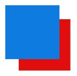
Autre exemple, on va maintenant passer le calque bleu en incrustation. Cette fois, le calque bleu va s'incruster dans le rouge tout en gardant la couleur rouge de base, mais en saisissant uniquement les pixels les plus foncés. C'est l'inverse du mode éclaircir qui lui, va aussi mélanger la couleur, mais prendre les pixels plus clairs. Remarquez que sur du blanc, en incrustation, le calque disparait.
Si, maintenant, je remets le calque bleu en mode normal, que je passe le calque rouge par-dessus le calque bleu et que je mets le calque rouge en mode incrustation (vous pouvez souffler :) ). La couleur a encore changé, et c'est bien normal, puisque là, c'est le bleu qui s'incruste dans le rouge. Et c'est là que c'est intéressant, parce que vos modes de fusion dépendront du placement de vos calques. Autrement dit, il vous faudra surement plusieurs essais (inverser les calques par moment) pour voir si ce mode conviendrait mieux qu'un autre.
Plus compliqué maintenant : j'ajoute un nouveau calque vert au-dessus du rouge que je passe aussi en incrustation. La couleur bleue s'est encore plus assombrie. Oui car, comme je vous l'ai expliqué plus haut, plusieurs modes de fusion peuvent être combinés ensemble pour faire des tonnes d'effets à n'en plus finir. Essayez d'obscurcir le calque bleu et le mode changera encore et ainsi de suite...
Oui, mais, par exemple, je mets le calque bleu en lumière vive, d'accord, ça donne une autre couleur. Comment ça marche exactement ?
Eh bien effectivement, chaque mode de fusion comme vous l'avez compris, a ses propriétés bien particulières. Je ne pourrai pas vous lister chaque mode de fusion un à un, ça serait beaucoup trop long, et puis on est dans un tutoriel pour le Space Art (ne vous inquiétez pas, j'ai pas oublié :p ) pas dans l'explication de Photoshop. Si vous voulez savoir spécifiquement comment marche chaque mode, il suffit de vous rendre sur le manuel de Photoshop (oui, ça existe et en français en plus).
Pour résumer rapidement, je dirais que les modes de fusion qui sont principalement employés dans le Space Art sont :
La superposition, est beaucoup utilisée, car elle éclaircie les couleurs, elle garde les ton clairs et ne prend pas en compte le noir (ça ne vous rappelle pas quelque chose ça d'ailleurs ? La texture des nuages.),
L'incrustation et la lumière tamisée pour donner du "punch" aux couleurs,
Éclaircir (le plus souvent combiné à du flou gaussien) pour relever les couleurs très claires sur les images.
Et encore bien d'autres qu'on aura l'occasion de voir juste après...
Voila, (et c'est déjà bien :) ) n'hésitez pas à "jouer" avec ses modes de fusion qui sont vraiment très utiles, de toute façon vous ne pourrez pas y louper. Ne vous limitez pas à ma petite liste, essayez-les tous et vous serez peut-être étonnés (et satisfaits) du résultat. ;)
Comme je vois qu'il vous tarde de faire ce fameux soleil, commençons simplement, avec ce que nous avons appris. :pirate:
Votre premier soleil :
Sur un fond noir, on va prendre notre pinceau de type soft et on va le mettre en taille 140, opacité de 100%, flux à 100%, couleur orange : #e9740d. On va donner des coups de pinceaux au fur et à mesure en changeant la couleur du pinceau de façon à faire un léger dégradé (du rouge à l'extérieur au jaune à l'intérieur), tout en appliquant des modes de fusion.
Faites juste un petit clic de souris pour commencer. Ceci est notre base :
On va refaire un autre coup de pinceau dans un nouveau calque, juste au-dessus du précédent, en changeant légèrement la couleur (une couleur plus foncée : #ff6800) et c'est là que j'utilise mon premier mode de fusion : j'applique ce calque en mode incrustation. La couleur s'est obscurcie.
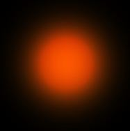
Ce qu'on peut faire ensuite, c'est augmenter la luminosité. On duplique le calque précédent et on le passe en superposition (je passe l'opacité à 50% pour éviter de trop saturer).
Voilà, maintenant on va mettre du jaune. Toujours dans un nouveau calque, on change de couleur : #ffd800. Et je mets ce calque en incrustation
Et enfin pour finir, on termine par le centre avec du jaune très clair (#fff4b6) pour "réveiller" le jaune du dessous. On abaisse légèrement la taille du pinceau (en 125). Cette fois, on veut mettre très peu de luminosité au centre, on va donc passer le calque en mode lumière tamisée.
Pour donner un peu plus de punchs au milieu, on pourra refaire un autre coup de pinceau, encore plus petit (taille 80) en le plaçant toujours bien au centre et en mettant un mode de fusion. Je vous laisse choisir pour celui ci. :)
Un petit résumé de ce qu'on a :
On peut même faire un changement de couleur très rapidement grâce au mode : teinte ou couleur. Là aussi, je vous laisse deviner comment, ce n'est pas bien compliqué. ;)
Et voilà, vous avez votre premier soleil. Oui, mais... là ça ne va pas. Pourquoi ? Tout simplement parce que si vous mettez une couleur de fond (à la place du noir) votre soleil va se confondre avec cette couleur et il finira par disparaitre totalement (Comme notre propre soleil dans 5 milliards d'années :'( ). C'est pour cela qu'il faut envisager quelque chose d'autre, une forme qui ne pourra pas facilement se mélanger avec la couleur de fond que vous aurez choisie.
Précédemment, vous avez fait un soleil (ou quelque chose qui y ressemblait plus ou moins) à l'aide des pinceaux. Ici, on va employer une toute autre méthode en usant des outils d'automatisation présents sur Photoshop, c'est-à-dire : les filtres. Vous les connaissez surement (pas forcément tous), en tout cas vous avez déjà utilisé l'outil sphérisation (dans Filtre / Déformation) et c'est sans aucun doute l'outil le plus exploité quand on fait du Space Art (avec le flou gaussien en plus). Pour cette partie, on va refaire un soleil, cette fois il sera légèrement plus détaillé à l'intérieur, ça fera un peu comme de petites veines, et ce, grâce à l'action de quelques filtres. Là, ça va être simple, car vous avez juste à suivre une simple procédure.
C'est parti !
On va commencer par mettre une couleur de fond. Prenez une couleur chaude, de l’orange par exemple (#ee7202).En règle générale, ça sera toujours par là qu'il faudra amorcer le travail : colorier le fond. N'hésitez pas à baisser l'opacité de votre pinceau pour éviter de trop surcharger dès le début. On aura l'occasion de reparler de cette technique plus tard. Ensuite, on va faire une sélection à l'aide de l'outil ellipse pour délimiter la partie de notre soleil.
On démarre avec notre premier filtre : les nuages. Ça se trouve dans Filtre / Rendu / Nuage. Ça simule une texture qui ressemble à des nuages.
Maintenant, ce qu'on va faire, c'est donner un peu plus de relief aux nuages avec le filtre nuage par différence qui se trouve dans le même répertoire que les nuages. Faites ce filtre plusieurs fois d'affilée et vous verrez le relief se détailler de plus en plus. Attention toutefois de ne pas en abuser. Moi, par exemple, je l'ai répété dix fois. Regardez ce qui a changé sur l'image. Si vous avez à peu près une image qui ressemble à une radio des poumons, c'est que c'est bon, vous pouvez continuer :pirate: :
On voit déjà quelques petites sortes de veines qui apparaissent très légèrement ; nous, on va faire ressortir ses veines. Sur mon image, elles sont principalement sur les côtés :
Pour mieux les voir, on va inverser la couleur (blanc en noir, noir en blanc), en appuyant sur la touche CTRL + I. Puis, grâce à l'outil niveau (CTRL + L), on va faire ressortir le blanc (anciennement noir) en bougeant le curseur du milieu vers la droite.
Et là, comme d'habitude, comme pour faire une planète, on va utiliser l'outil sphérisation à 100%, on pourrait le faire une deuxième fois à 50%, mais les traits que je veux garder sont principalement sur les cotés, si je refais une sphérisation une deuxième fois on risque de ne plus les apercevoir, ça ne servirait à rien. Alors, je ne fais qu'une fois la sphérisation pour ce coup. Ensuite, on va utiliser un filtre qui va se charger de détailler les contours : Esthétique / Tracés des contours. Notre opération est achevée, on peut remettre les tons comme avant, on va ré-inverser (CTRL + I).
On va enfin donner de la tonalité à notre première image, une nuance de rouge : ça sera notre base. Et comme dans la première partie, on va atténuer cette couleur sur différents calques jusqu'à atteindre le jaune. Pour changer facilement la teinte, on aurait pu utiliser un mode de fusion (le mode couleur ou teinte), mais nous n'aurons plus eu "le contrôle" de la couleur sur les calques qui viendront au-dessus, on va donc reprendre l'outil teinte/saturation que vous connaissez déjà (CTRL + U). Voilà comment passer la couleur en rouge :
Notre base est terminée !
Quoi c'est tout ? Ça ne ressemble à rien !
Oui, là on a chargé sur les côtés, maintenant il faut que vous fassiez exactement la même chose pour le milieu et ainsi de suite. En d'autres termes, il faut que vous remplissiez votre soleil de petites veines. Et pour ça, il faut refaire les étapes précédentes depuis le début. Pour vous aider, voici la deuxième phase en accéléré...
Dans un nouveau calque, je refais le nuage, puis le nuage par différence. Je répète l'action avec CTRL + F. Sauf que là, il faut faire attention où les contours apparaissent, moi je veux qu'ils aillent au milieu puisque j'ai déjà fait les cotés. Bon, le filtre est un peu aléatoire, mais avec un peu de chance ils iront au milieu. :) Puis après vous connaissez le truc : on interverti la couleur, on fait ressortir nos contours avec l'outil niveau, la sphérisation arrive, ensuite on utilise le filtre tracé des contours et pour finir on ré-inverse notre couleur pour coloriser le tout.
Tout ça n'est pas compliqué, mais il faut juste être persévérant, parce que vous serez surement amenés à refaire quatre fois cette étape (eh oui c'est aussi ça le Space Art, la patience :) ). Pour la colorisation, souvenez vous, on veut un dégradé (Rouge au jaune), alors là j'utilise de l’orange sur mon deuxième essai.
Oui, mais maintenant qu'est-ce que je fais de l'image que je viens de créer ? Parce qu'elle cache le calque d'en dessous.
Oui, le premier calque cache l'image d'en dessous. C'est l'occasion ou jamais d'utiliser un mode de fusion ! Vous avez le choix, ceux qui marchent le mieux dans notre cas seraient la superposition ou l'éclaircissement. Mais je dois vous avouer que le mode Densité linéaire - reste très intéressant pour révéler les tons clairs, en plus de ça, on ne l'a pas encore utilisé, donc on en profite. :) Je passe donc mon deuxième calque en mode Densité linéaire - !
Solution intéressante !
De la fusion et de l'opacité :
L'opacité ou la transparence, est un bon moyen de diminuer la visibilité d'un calque, cela évite d'avoir des couleurs trop saturées à un endroit et cela permet surtout de pouvoir rajouter à chaque fois des petits détails qui vont faire toute la différence sur votre travail. :)
: ici, mon calque n'est visible qu'a 80%.
Bon maintenant, imaginez que j'ai déjà toutes mes bases, du rouge au jaune (c'est-à-dire quatre calques en tout). On va mettre toutes nos images en densité linéaire - (sauf le premier calque bien entendu) et on va voir comment ça se passe ! Voici mon calque de base en rouge et mon deuxième calque en orange :
Je mets mon calque en densité linéaire - comme on a dit, ça me donne ça :
Le problème c'est que la luminosité reste bien trop forte, même si on doit faire un soleil, il ne faut pas que les couleurs soient saturées comme je vous l'ai déjà dit. C'est-à-dire qu'il ne faut pas qu'il y ait trop de luminosité à droite et rien à gauche, je vous rappelle qu'il reste au moins deux autres calques de couleurs différentes qui vont venir juste au-dessus, alors autant baisser la luminosité dès maintenant. Pour l'atténuer, je descends légèrement l'opacité, à 80% (oui c'est très léger).
J'insère mon deuxième calque, toujours en densité linéaire - lui il est particulier, parce que c'est surtout sur les côtés que ses contours apparaissent. Il faudra fortement baisser l'opacité (car les contours ont déjà été principalement fait avec le calque orange). Je le mets à 30% d'opacité !
Et enfin mon dernier calque, le calque jaune. Je baisse seulement son opacité à 50% cette fois, car je veux voir un peu plus de jaune. Après c'est une question de goût, évidemment.
Pour résumer, tous nos calques sont en densité linéaire -, mais avec une transparence bien différente à chaque fois.
Pour les plus sceptiques d'entre vous, voilà ce qui se serait passé si vous aviez laissé tous vos calques avec une transparence de 100% ; aucune transparence quoi :
Je ne sais pas vous, mais je trouve ça un peu trop... vous m'avez compris. :D
Amélioration de l'éclairage
Ça n'est pas totalement fini, car en plus, on peut augmenter la luminosité ambiante de notre début de soleil. Et ça, c'est le flou gaussien qui le fait ! Pour démarrer cette mini amélioration, on va dupliquer notre dernier calque (le calque jaune), on le remet en mode normal, opacité 100%. Et on le passe en mode éclaircir ou en mode superposition au choix (notez que le mode superposition est bien plus "puissant", car il récupère tous les pixels clairs des calques du dessous, alors que le mode éclaircir ne se concentre principalement que sur les blancs).
Je le mets en mode superposition, ensuite je vais lui appliquer un flou gaussien, ça se trouve dans Atténuation / Flou gaussien, d'une valeur de 4.
Et voila un nouvel éclairage, plutôt pas mal, j'ai juste baissé légèrement l'opacité à 75% :
Amélioration des contours
À notre niveau, on ne peut pas en rester simplement là, il faut pouvoir améliorer ce qu'on a fait. On peut par exemple corriger les contours de notre cercle, ils sont bien trop lisses, on va faire en sorte de faire des mini rayons qui sortent de notre soleil pour qu'ils éclatent à nos yeux. :)
Pour ça, on va demander de l'aide aux filtres (eh oui, encore) !
On commence par sélectionner notre calque (CTRL + Clic sur la base), puis on va faire un contour. Ça, c'est simple, c'est dans Édition / Contour, une valeur de 2px pour la petite taille de notre soleil conviendra très bien.
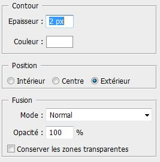
On pourrait appliquer un flou gaussien sur ce contour, mais ça ne serait pas suffisant. C'est alors que le filtre soufflerie entre en scène (Filtre / Esthétique / Soufflerie). On applique d'abord ce premier effet sur la droite :
On va refaire la même chose pour les trois autres côtés, sauf que le filtre nous propose de le faire soit à gauche soit à droite. :euh: Pas de problème ! On est des durs maintenant. :D
Il suffit tout simplement de faire une rotation de notre contour à 90° et pour cela, il faut faire une transformation : Édition / Transformation / Rotation 90° Horaire et hop, d'un coup notre soufflerie se retrouve propulsée en haut ! Il n'y à plus qu'a refaire le précédent effet (CTRL + F), de refaire une rotation, etc... Jusqu'à ce que vous ayez vos quatre côtés de remplis :
Et pour terminer, je passe le calque en mode incrustation, je le duplique (je passe le calque dupliqué en mode normal) et je lui applique un léger flou gaussien. Et voilà ! On l'aura enfin terminé notre beau soleil.
Il est bien évident que ce soleil peut être encore et toujours amélioré, et avec tout ce que vous avez appris (les modes de fusion, les filtres), vous pouvez faire bien mieux ! N'hésitez pas à vous entrainer, je vous garantis que ça en vaut la peine et plus tard vous irez beaucoup plus vite lorsque vous ferez de telles manipulations. J'ai continué un peu notre soleil, voici ce que j'obtiens avec seulement l'aide des modes de fusion, essayez un peu. ;)
La source, le .PSD :
Je vous livre avec gentillesse le .PSD de cette deuxième partie, pour que vous puissiez voir en détail comment ça marche, où même si vous êtes coincé à un moment, cela pourra surement se révéler utile pour vous. ;) La source contient tous les calques que j'ai utilisés pour la partie 1 et 2 et affiche le rendu final de l'image juste au-dessus.
Quoi, pas encore ? Eh non, on peut encore améliorer notre soleil (eh oui, encore et toujours :) ), en lui ajoutant des éruptions solaires par exemple. On peut le faire avec l'outil doigt sur le calque du contour blanc. C'est marrant, mais ce n'est pas très réaliste et c'est ce qu'on recherche avant tout.
C'est pour cela que l'utilisation de fractales devient intéressante et même parfois nécessaire ! Et ça, c'est dans la prochaine partie ! :)
Je dois vous avouer que je n'ai jamais été doué pour les définitions, celle que je trouve sur Wikipédia résume bien ce que j'aurais pu dire si j'avais été moins bête :
Citation : Wikipédia
On nomme figure fractale ou "fractale" par substantivation de l'adjectif (ou encore en anglais fractal), une courbe ou surface de forme irrégulière ou morcelée qui se crée en suivant des règles déterministes ou stochastiques impliquant une homothétie interne. Le terme « fractale » est un néologisme créé par Benoît Mandelbrot en 1974 à partir de la racine latine fractus, qui signifie brisé, irrégulier (fractales n.f). Dans la « théorie de la rugosité » développée par Mandelbrot, une fractale désigne des objets dont la structure est liée à l'échelle.
Pour ceux qui n'ont pas vraiment compris, ça n'est pas bien grave, sachez juste qu'en gros, des fractales sont des images générées à partir de calculs mathématiques qui peuvent donner ça :
Découverte du logiciel Apophysis
Pour faire des fractales, on va utiliser un autre logiciel, car faire des fractales seulement sur Photoshop serait une hérésie. Mais ne vous en faites pas, le logiciel est vraiment TRÈS simple d'utilisation ; en 4 minutes top chrono vous l'aurez pris en main.
Le fameux logiciel en question c'est Apophysis, il est en anglais, mais pas de panique, je vais vous guider durant toutes les étapes. ;)
Apophysis, pharaon égyptien né en 1335 av. J.-C.... hum, pardon. :-°
Avant de commencer il faut le télécharger sur le site et l'installer, mais ça, vous savez le faire je vous fais confiance. ;)
Si vous êtes en mesure de voir l'interface du logiciel, c'est que c'est bon. :)
Vous avez déjà sur le côté gauche toute une liste qui représente des exemples de fractales déjà enregistrées :
Et à droite l'affichage de votre fractale, le rendu final actuel :
Vous pouvez par exemple voir en bas, dans la barre d'état le détail de tout ça :
En (1), le temps écoulé,
(2), le temps restant,
(3), le nom de la génération.
Vous avez aussi des choses intéressantes dans la barre de menu, voici les boutons qui peuvent nous plaire :
En (1), c'est la qualité du rendu qu'on voudra donner à la fractale lors de l'enregistrement sur votre disque dur,
(2), bien utile si vous avez une petite erreur, un petit retour en arrière s'impose,
(3) pour remettre votre fractale à son placement d'origine,
(4) le menu de la transformation c'est grâce à ça qu'on va générer notre fractale, j'en reparle juste après,
(5), vous pouvez même voir l'animation que fait votre fractale si vous arrêtez la vidéo au bon moment vous pouvez avoir une belle capture sur la fenêtre d'affichage.
Une fois que votre fractale est affichée, vous pouvez lui apporter quelques variations de formes, c'est dans le menu variation, vous en avez de toutes les sortes, vous pouvez même lui donner une forme de cœur (heart en anglais), si ce n'est pas mignon : :ange:
Fabriquer sa fractale :
Vous connaissez maintenant les bases du logiciel, vous pouvez alors, sans aucun problème faire votre première fractale. C'est parti !
Déjà, je choisis une variation, moi je mets random (aléatoire) dans le menu variation. Après quoi, j'appuie sur F9 pour que des fractales s'affichent, dès qu'il y en a une qui me plait, hop je m'arrête là. C'est sur cette fractale que je vais travailler :
On va ensuite lui changer sa couleur, c'est-à-dire son dégradé, mais ça n'est pas obligatoire, après tout si la couleur qui s'affiche vous plait, vous pouvez largement la garder. Moi, par exemple, je veux prendre du bleu, parce qu'après je voudrais remplacer ça en jaune pour l'intégrer dans mon soleil.
1. Pour changer le dégradé, on va dans : Flame / Gradient (CTRL + G)
Il y a une grande liste juste en dessous (preset), vous avez un large choix de couleurs. Je passe donc du ton orange au bleu.
Puis, je vais modifier sa forme, pour lui donner quelques détails au fur et à mesure...
2. Pour changer sa forme, on va dans : Flame / Mutation (CTRL + M)
Au départ, j'ai choisi une forme hyperbolique, au milieu dans le tableau qui apparait, c'est votre fractale actuelle, et sur les côtés, ce sont d'autres fractales plus complexes créées à partir de votre première fractale.
je veux améliorer ma fractale, je refais donc une autre mutation, cette fois je choisis une forme de type spirale ce qui me donne ça :
Après, on va modifier cette forme pour qu'elle soit un peu mieux, c'est-à-dire qu'on ne veut pas qu'elle sorte de l'écran, qu'il y ait un peu moins de grain, et qu'elle soit un peu plus éclairée.
3. Pour ajuster sa forme, on va dans : Flame / Ajust (CTRL + A)
C'est là qu'on peut faire tout ce que je vous ai dit précédemment. Je vérifie que le gamma n'est pas trop haut, je règle la luminosité (Brightness), ensuite je dézoom et je règle la hauteur pour qu'on puisse totalement voir la fractale (dans Camera).
Et voilà ! On à réussi à faire une fractale. Et si vous vous y connaissez en homothéties (ou pas), vous pouvez même la modifier plus précisément grâce à l'éditeur (editor, CTRl + E) :
Vous verrez c'est vraiment très complet, en fait vous pouvez vous amuser à déplacer les triangles, ça vous fera encore pleins d'autres formes intéressantes.
Une fois que c'est bon, vous avez fini de générer votre fractale, il faut l'exporter sur votre PC !
Pour ça, allez dans : File / Export Flame (CTRL + X), dans "file name" c'est vous qui choisissez le répertoire où sera enregistré votre fractale. Puis choisissez une très grande taille (dans les 2000 pixels) comme pour nos textures de planète, en qualité 100. Et c'est parti !
La génération peut prendre un certain temps (en fonction de la taille que vous avez mis, de la complexité de la forme et surtout en fonction de la puissance de votre machine). Mais tout ira bien avec un peu de patience. :)
Voila qui termine cette première mini partie destinée à la découverte et à l'utilisation de Apophysis. En somme ce n'était vraiment pas bien compliqué, essayez de tester le logiciel plus en profondeur, et je suis sûr qu'à la fin vous arriverez à faire des centaines et de superbes fractales pour vos compositions spatiales.
Si vous n'avez pas réussi à faire une fractale correcte, ou même pour suivre la suite du tutoriel, vous pouvez télécharger le rendu final de ma fractale. :)
J'ai ma fractale, c'est bien beau, mais maintenant, qu'est-ce que j'en fais ?
Maintenant, on va la rendre plus "belle", pour pouvoir juste après l'intégrer dans votre création, là où vous avez vos planètes. Moi, je veux la placer dans la création où j'ai fait mon soleil. Cette fractale sera un très bon moyen pour simuler des éruptions solaires qui seront largement mieux que ce que je vous ai montré rapidement à la fin de la partie 2 (avec l'outil doigt). En fait, ce qu'on voudra faire sur notre fractale, c'est de lui donner une couleur dorée (ou, du moins, on va essayer :-° )...
Pour cela, exactement comme ce qu'on à vu, on va utiliser les modes de fusions et quelques filtres. On veut une couleur chaude (rouge/orange/jaune) et on va faire ressortir le blanc du milieu.
On commence : la base
Déjà, vous l'avez tous vu, sur notre fractale il y a un peu de "bruit", le bruit c'est tous les petits points blancs de 1 pixel sur le fond noir. Sur la fractale que j'ai actuellement, je n'en ai pas beaucoup parce que j'ai essayé de la générer au mieux pour qu'il y en ait le moins possible
voici un exemple de fractale où vous pouvez voir beaucoup de bruit :
Ce bruit peut être plus ou moins facile à enlever sur Photoshop, grâce au mode de fusion incrustation qui ne va garder que les pixels très clairs et ses alentours. Et c'est ce qu'on va faire !
Dupliquez votre calque et passez-le en mode incrustation, les extrémités sont bien moins visibles maintenant.
Qu'à cela ne tienne ! On duplique le calque et maintenant on va faire ressortir la couleur avec le mode densité linéaire -, et l'on commence à redéfinir la couleur avec la teinte saturation (CTRL + U) en couleur jaune. Et pour finir notre opération, on applique un flou gaussien de 5 par exemple (à vous le choix). Je mets son opacité à 70%, car comme je vous l'ai expliqué auparavant, on veut éviter que les couleurs soient trop saturées par la suite.
Voilà ce qu'on a pour le moment :
La couleur rouge :
On passe au rouge ! Et pour ça, on duplique notre calque de base (le calque dupliqué est toujours au-dessus), et on va donner un ton de rouge. Ça, vous savez le faire ; plus besoin que je vous montre :) (Teinte / Saturation ou CTRL + U, redéfinir à rouge, sans oublier de mettre la saturation à 100). J'applique aussi un flou gaussien de 5.
On va donner un peu plus de couleur au rouge, pour le rendre moins sombre. Mais là, ce que je voudrais faire, c'est une sorte de mini soufflerie, sur ma fractale, je voudrais que mon centre soit projeté vers le haut à gauche. Il y a bien l'effet soufflerie qu'on a vu récemment, mais il n'est pas assez puissant (il fonctionne aux panneaux solaires :magicien: ) ça ne suffira pas à faire quelque chose de bien.
Un nouveau filtre entre en jeu ! :ninja: :ninja:
Le flou radial me parait tout indiqué : Filtre / Atténuation / Flou Radial..., il permet de faire comme je l'ai dit, des sortes de projections, ça peut être intéressant. Pour commencer je duplique mon calque rouge et j'applique le filtre en zoom à 100%, j'essaye de le positionner au centre en mode zoom, en fonction de ma forme, c'est-à-dire en bas à droite pour qu'il puisse se projeter en haut vers la gauche.
Ensuite, je vais atténuer la couleur de ce rendu au fur et à mesure (du rouge à l'orange) :
Je duplique le calque rouge, avec la teinte saturation je le mets en rouge plus clair, je lui applique une opacité de 40%
Je refais la même chose, sauf que je lui donne une teinte encore plus claire (de l’orange foncé), et je passe enfin ce calque en opacité à 20%
Voila à quoi devrait ressembler vos calques :
J'ai ma base, puis au-dessus mes trois calques avec le filtre radial.
La couleur jaune :
On termine avec la couleur jaune, celle qui va donner notre couleur dorée.
On duplique (encore et toujours), le calque rouge, et on donne un nouveau ton de couleur sur le calque (du jaune bien entendu !). On le passe en densité COULEUR - pour faire ressortir la COULEUR. Eh oui, là on ne veut prendre que la couleur, pas tous les pixels clairs. La densité couleur - nous parait tout indiquée. :)
D'ailleurs pour faire ressortir encore un peu mieux cette couleur, on peut dupliquer le calque jaune et le passer en mode couleur, MAIS avec une opacité à 50%.
Je mets un flou gaussien au calque.
Pour finir, je duplique ce calque et je le passe en mode densité couleur - à 75% d'opacité.
La touche finale : Pour la petite touche finale, n'ayons pas peur de la lumière ! On désirerait vraiment que ça flashe un peu plus. Pour ça, on aura juste qu'à dupliquer le calque précédent, et le passer en mode densité linaire - pour tout faire ressortir. On pourrait même le dupliquer une deuxième fois, mais ça serait trop abuser pour après.
Le problème, c'est que je veux que la couleur n'éclate pas trop sur le côté en haut à gauche, la luminosité principale doit être seulement au centre. Pour gommer un peu ce surplus, j'applique un masque de fusion. On a déjà étudié se principe dans la partie 3 pour effacer les rayons du soleil, ici c'est exactement pareil, on veut gommer la partie en haut à gauche.
Voilà où on en est au niveau des calques pour finir :
Notre image finale :
L'intégration à présent !
On peut maintenant revenir à notre point de départ, oui notre soleil. Vous ne l'avez quand même pas oublié j'espère. :D
Positionnez votre fractale dans votre composition (en dessous des calques du soleil, mais au-dessus du fond), il faudra surement la réduire et faire quelques légères rotations, le tout en mode superposition (ça va supprimer le fond noir) et ça sera parfait ! Sur mon document final je l'ai dupliqué deux fois et je l'ai placé en haut à gauche et en bas à droite, avec un peu de flou gaussien en plus, sans abuser.
Le rendu final :
On a, comme il se doit, un beau soleil, avec de grandes éruptions, grâce à l'aide de notre fractale qu'on a préalablement générée sur Apophysis, tout va bien.
Mais ne vous réjouissez pas trop vite, on a encore du boulot. D'ailleurs, notre soleil n'est pas complètement fini, car si l'on voulait bien faire il faudrait le passer à la "postproduction", c'est-à-dire l'enregistrer en .JPG et changer ses couleurs, sa teinte, pour le rendre un peu plus dynamique. Cette technique, j'en parlerai dans la partie qui va suivre...
Dans cette deuxième partie, nous allons refaire un soleil, mais cette fois ça va être un peu différent, c'est-à-dire que nous allons utiliser les mêmes techniques, mais avec des méthodes différentes. Je ne dis pas que le soleil sera meilleur visuellement — après tout, ça dépendra des gouts de chacun — mais cette fois ça sera quelque chose de plus "manuel". On évitera les filtres et autres logiciels extérieurs. On peut dire que cette partie se rapproche le plus des moyens qu'on utilise en général pour faire du Space Art, même si chaque personne à bien évidemment sa propre façon de faire, celle-là se veut plus "instinctive" et plus rapide.
Avec ce que vous avez appris dans la partie précédente sur le premier soleil - notamment sur les modes de fusions - vous serez tout à fait capable, avec un peu d'imagination (et ça, je sais que vous en avez ;) ) de faire du "bon Space Art", cette partie vous guidera pour mieux affiner ce que vous savez déjà.
Cette partie, rassurez-vous, est moins longue que la précédente, elle va vous permettre de souffler un peu et de découvrir surement de nouvelles choses.
Le fond, ou plutôt, la couleur de fond est sans aucun doute la chose la plus importante lorsqu’on démarre un nouveau soleil. En effet, c'est avec cette teinte que vos styles de calque vont se répercuter. Une mauvaise couleur d'arrière-plan peut conduire à un soleil misérable. Il n'y a pas non plus que la couleur qui compte, mais aussi la manière dont vous faites ce fond. En bref : un bon démarrage = un bon soleil. :)
Ouvrez un nouveau document avec une largeur légèrement plus grande, par exemple : 1500 * 1100 pixels.
Pour commencer, on va choisir notre couleur, on prendra de préférence une couleur pas trop claire dans les tons orange/marron. Quelque chose dans ce style : #772a10.
Ensuite, on va paramétrer notre pinceau. Moi, je prends une taille assez grosse de 320px de type soft d'une opacité de 20% et un flux de 80%.
Puis, on applique cette couleur sur notre document, mais pas n'importe comment. Vous aurez peut-être remarqué que si vous donnez un coup de pinceau sur votre précédent coup de pinceau, la couleur ne sera pas la même, elle deviendra plus claire. Ça, c'est à cause de l'opacité. Plus l'opacité sera faible, plus les couleurs auront tendance à s'additionner — à devenir plus claires — lorsque vous donnerez des coups de pinceau sur la même couleur.
Exemple sur ce dessin :
J'ai mon pinceau avec une opacité de 50%. Je donne un premier coup de pinceau en (1), et en (2) le second coup de pinceau en travers. Là où il y a le croisement, la couleur est plus claire et ça, vous devez le comprendre. Faites des tests.
Maintenant notre fond. On ne va pas le faire n'importe comment ; on veut faire notre soleil à gauche, donc la couleur de fond qui va être la plus lumineuse doit être à gauche et doit s'estomper au fur et à mesure que l'on va vers la droite :
Ça va être comme si on utilisait l'outil dégradé de Photoshop (en dégradé radial) :
Il faut donc qu'on applique notre premier coup de pinceau tout à droite et on reviendra vers la gauche sans lâcher la souris. De la même manière, notre deuxième coup sera à droite, mais un peu moins éloigné que le précédent. Etc. jusqu'à ce qu'on atteigne la gauche, là où il y a aura notre soleil par la suite, on donnera plusieurs petits coups de pinceau très serrés entre eux de façon à faire une sorte de rond. Schématiquement, ça pourrait donner ça :
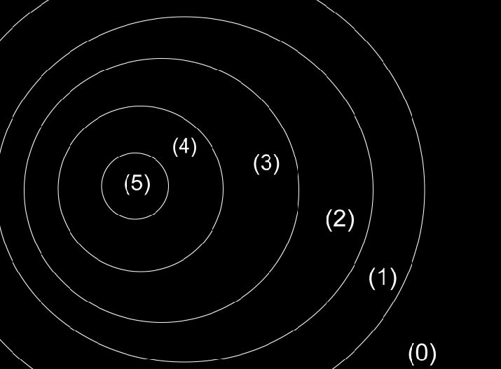
On démarre en (0) et on remontre en (5), on lâche la souris, Puis, on reprend en (1) et on lâche en (5), En (2) et en toujours en (5). Etc.
Bon, bien sûr, c'est théorique. Nous sur notre document on est pas obligé d'aller jusqu'à à l'extrême droite pour entamer notre dégradé, on peut commencer beaucoup plus court. On peut même partir du milieu. Par exemple, moi je pars du centre, puis j'étale sur les côtés :
C'est à vous de choisir, le principal c'est qu'on ait un dégradé.
Voilà, vous avez fini votre dégradé :
Que diriez-vous de lui donner un peu plus de vivacité, une couleur encore plus chaude. Pour ça, c'est simple, j'utilise les modes de fusion (qui sont toujours très utiles). :) Je duplique mon premier calque et je le passe en mode superposition à 50% :
Je re-duplique le calque, et cette fois, je le mets en lumière tamisée encore à 50% :
Votre fond est maintenant terminé, vous pouvez passer à la suite : la forme du soleil !
Maintenant, il n'y a plus qu'à faire la forme de notre soleil, c'est-à-dire le rond qui va se placer sur le fond. À ce stade, normalement, vous devriez avoir ça comme calque pour le fond :
L'extérieur :
Pour notre forme, on commence par prendre l'outil ellipse de sélection, puis on trace un rond au centre de notre dégradé (en restant appuyé sur MAJ pour un rond parfait), là où c'est le plus lumineux. Ne le faites pas trop grand pour le départ. Et l'on remplit cette sélection d'une couleur : #874b41. Assurez-vous que vous avez fait ça dans un nouveau calque. ;)
Ensuite, on va appliquer un style sur le calque. Une lueur externe (couleur blanche). On veut que cette lueur soit combinée à notre fond, je la mets donc en incrustation. Voilà ce que ça donnerait (sans couleur de fond) :
On va dupliquer ce rond pour donner à la lumière encore plus d'intensité comme on l'avait fait lors de nos précédents exercices sur le premier soleil. Je garde les mêmes paramètres de styles de calque, mais je baisse la taille de la lueur externe et je rajoute une lueur interne (pour la couleur de la lueur interne : #ff4e00) :
Les petits malins auront compris qu'on peut encore dupliquer ce calque. Oui parce que maintenant on veut la couleur jaune ! On duplique encore une fois le calque donc, on baisse encore la taille de la lueur externe tout en gardant les paramètres principaux (je change juste l'opacité et son contour) :
Un petit mot sur les brushes :
Voilà, maintenant que l'extérieur est fait, on peut passer à l'intérieur. On va utiliser une autre technique qui sera peut-être toute nouvelle pour vous : les brushs. Les brushs, ou les brosses en français sont parfois fort utiles, ce sont des formes qui remplacent celle du pinceau que vous avez de base. Pour voir une forme, il vous suffit de prendre l'outil pinceau, puis de faire un clic droit sur votre document de travail, et enfin de cliquer sur la petite flèche en haut à droite :
À partir de là, une liste s'affiche avec toutes les formes installées sur votre Photoshop. Pour installer une forme, c'est très simple. Déjà, il faut la télécharger. :-° Pour notre exercice, on va prendre des formes de nébuleuse qu'on peut facilement trouver sur le site deviantART :
Une fois téléchargée, il faut aller sur le répertoire de votre disque dur là où votre Photoshop est installé, puis dans le dossier : Paramètres prédéfinis / Formes
L'intérieur :
Sélectionnez la forme de votre rond (pour éviter tout dépassement) et dans un nouveau calque, on va remplir le centre avec les brushes que vous avez téléchargés. J'utilise la couleur #efad70, et je mets ma forme à 100% pour l'opacité et le flux. Voilà ce que ça devrait donner sans les autres calques :
Avec les autres calques :
Puis on duplique le calque qui contient les brushs et on le passe en mode superposition :
Ensuite, toujours à l'intérieur, on va rajouter quelques petites tâches à notre soleil, on pourrait par exemple utiliser des brushes. Mais, pour changer un peu, je vais utiliser une image avec des nuages. Je reprends l'image de la NASA Earth Observatory : , qu'on peut facilement retrouver sur Google image en tapant "cloud map".
Je passe l'image en mode superposition pour supprimer le noir, et je récupère quelques petits bouts que je place un peu partout sur l'intérieur :
Les fractales :
On va passer aux fractales pour les éruptions solaires, vous pouvez utiliser Apophysis comme logiciel si vous le voulez, mais pour changer, dans cette partie je vais vous montrer l'utilisation des fractales avec les brushs. La méthode des brushes est moins lourde que ce qu'on à vu précédemment avec les fractales, elle vous offre plusieurs possibilités, néanmoins elle reste très limitée, car là, vous ne pouvez pas trop jouer sur les couleurs et vous ne pouvez pas modifier les formes comme vous le voudriez. Mais ça reste utile quand on veut faire quelque chose de rapide et d'élégant à la fois, voyons ça de plus près...
Le problème, voyez-vous, c'est que les contours sont bien trop visibles (ça fait une sorte de carré, je vais gommer ça pour ne garder principalement que le côté gauche :
Je le passe en mode incrustation et je le duplique plusieurs fois pour qu'il soit mieux visible :
On continue sur le lancement de l'utilisation des brushs, cette fois on va reprendre les brushs de nébuleuses de juanez qu'on avait téléchargés pour remplir le soleil, on applique la même méthode que pour la fractale : normal puis en incrustation.
On pourrait s'arrêter là, mais le problème, c'est que le centre du soleil me parait un peu trop blanc, il manque des taches. Et puis, le contour du soleil est encore bien trop lisse ; pour remédier à ça, on va l'entourer de blanc avec le pinceau, en mode soft, ça, vous savez le faire. Ça permet de ne plus voir correctement le contour :
Les taches :
Pour les taches, c'est là que ça va se compliquer. Avec l'aide du pinceau, on applique plusieurs couches de couleur. Je vais vous montrer ce que ça donne sur du fond noir sans aucun mode de fusion, puis sur l'autre image, ce que ça donne avec le mode de fusion que j'aurai choisi. Suivez bien le guide !
Je prends mon pinceau : opacité 100%, Flux 100%, taille 60 pixels, couleur : #b99a7e. Je donne plusieurs petits coups là où ça m'intéresse, sans pour autant remplir tout mon soleil.
Je passe ce calque en mode produit.
Sur un autre calque, avec la même technique, j'applique une autre couleur : #af6b3a
Je passe ce calque en mode incrustation .
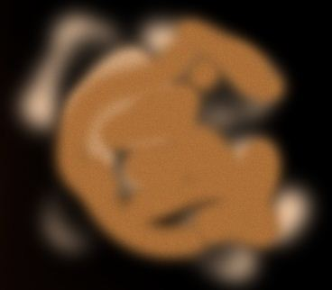
Encore sur un autre calque, avec toujours une couleur plus foncée : #811200, j'applique mon pinceau.
Je passe ce calque en mode incrustation .
Et pour finir, je mets du noir sur presque tout mon soleil dans un nouveau calque pour donner aux taches une couleur plus foncée.
Je passe ce calque en mode incrustation avec une opacité qui varie entre 50 et 100%, à vous de choisir.
Et voilà ! Vous avez terminé votre nouveau soleil, bravo ! Vous pouvez à présent mettre quelques détails en plus sur les taches ou sur la fractale par exemple. N'hésitez pas à faire vos propres tests !
Mon rendu final :
Un autre soleil avec la même technique utilisée :
Ce n'est pas fini. On va essayer de l'améliorer grâce à la postproduction...
Cette partie n'est en aucun cas obligatoire. Elle permet juste de donner un aspect plus dynamique à votre rendu final en modifiant le ton et la nuance des couleurs, ou même carrément en modifiant toute sa teinte !
Pour ça, il faut enregistrer votre document en .JPG en qualité maximal. On va ensuite ouvrir ce .JPG dans Photoshop et c'est là qu'on va commencer notre postproduction.
Bon alors, comment ça marche concrètement ?
Déjà, on peut essayer de modifier les couleurs, si on veut changer l'aspect de notre soleil, pour ça on va dans : Images / Réglages / Courbes... ou CTRL + M. À partir de là, vous pouvez changer la teinte générale de votre composition, le RVB correspond aux trois couleurs rougevert et bleu :
Ou alors vous pouvez modifier chaque couche une à une. Par exemple, si je veux que mon soleil ait une teinte plus jaune, pour plus de facilité, je change chaque couche de couleur :
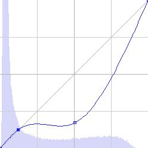
Ce qui nous donnerait :
Je ne vais pas rentrer dans les détails techniques sur les courbes ça ne servirait à rien. Le principal ici c'est que vous puissiez voir par vous même ce que ça fait si vous montez ou descendez une courbe.
Sinon, si l'on veut changer l'apparence de notre soleil, on peut prendre notre ancienne méthode, c'est-à-dire l'utilisation des filtres et des modes de fusions, ça marche bien. Faisons un essai.
Je vais dupliquer mon calque principal et je vais lui appliquer un filtre, là, on a le choix, essayez de tester ce que fait chaque filtre pour voir un peu ce que ça donnerait. Moi, je prends un filtre qu'on à déjà utilisé : le tracé des contours qui se trouve dans esthétiques. Avec ça, les contours seront surement mieux appuyés. Pour supprimer le blanc, je le passe en mode densité couleur + à 40% d'opacité :
Ensuite, je veux que mon blanc soit plus "pétillant", alors je duplique une nouvelle fois mon calque de base que je place tout au-dessus. Et je mets un flou gaussien de 5, ce calque, je le passe en mode éclaircir à 70% d'opacité :
Puis, je veux assombrir mon calque, car là, c'est beaucoup trop clair. Pour ça, je duplique mon calque de base et je le corrige grâce aux courbes (CTRL + M), et je modifie chaque couche, c'est exactement la même chose que je vous ai montrée juste au-dessus. Et je le passe en mode produit à 70%. Et enfin, on peut comparer notre première version avec celle qu'on vient de faire :
Vous pouvez même changer toute la teinte de votre soleil tant qu'on y est, c'est encore plus simple. Si on veut un soleil bleu par exemple, il faut juste remplir dans un nouveau calque une couleur de bleu (#1765a1] et la passer en mode teinte (ou en mode couleur, au choix). Et voilà, notre belle bactérie, euh, notre soleil pardon... :-°
Avec deux teintes : :soleil:
Maintenant les soleils n'ont plus de secret pour vous ! :soleil: C'est le moment de passer à autre chose. Dans le prochain chapitre, on verra comment créer d'autres planètes de notre système solaire !
Voila, j'espère que je vous ai donné envie de connaitre davantage ce fameux Space Art ; quoi qu'il en soit, si vous avez des questions ou même des problèmes dans certaines parties, faites-le moi savoir. Et surtout, n'hésitez pas à nous montrer vos créations ! :)


{kind=link}
{kind=link}
{kind=link}
{kind=link}
{kind=link}
{kind=link}
{kind=link}
{kind=link}
{kind=link}
{kind=link}
{kind=link}
{kind=link}
{kind=link}
{kind=link}